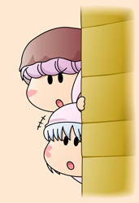
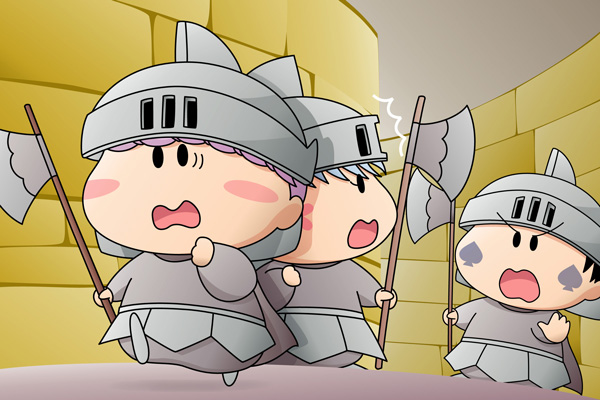

兵士１「あの侵入者を早くつかまえないと…」
兵士２「マルモ国王様は怒るとずっと機嫌が悪いからな」
兵士１「今日は自慢のヒゲを引っ張られたらしく、
今もかなり腹を立てていたみたいだぞ」
ムルモ「ちっ、もう目を覚ましているでしゅ」
パピィ「他に抜け道はないの？」
ムルモ「地下牢は一本道になってましゅから、ここを
通らないと出られないでしゅね」
パピィ「これじゃあここから出られないわよ！」
ムルモ「大丈夫、ここはボクに任せるでしゅね。
こんなときのためにとっておきのアイテムを
用意しておいたでしゅ」
そう言いながらムルモは兵士変身セットを取り出しました。
ムルモ「これで兵士に変身してうまく突破するでしゅよ」
パピィ「わ、わかったわ。
だけどそんなものどこに持っていたのよ？」
ムルモ「細かいことは気にするなでしゅ」
二人は兵士の格好になり、兵士たちの前へと向かいました。
兵士１「おっ、そっちの様子はどうだ？」
ムルモ「向こう誰もいなかったでしゅよ」
兵士２「そうか」
パピィ「じゃああたちたちは向こうを探ちてくるわね」
兵士１「了解！
私たちはもう少しこの辺りを探すとするか。
・・・・・ん？」
ムルモ＆パピィ「！！！」

兵士１「おまえたち、ほっぺの模様が違うぞ！」
ムルモ「…パピィ、逃げるでしゅよ！」
兵士２「ま、待てーっ！」
逃げても逃げても兵士たちは追ってきます。
パピィ「もう走れないわ」
ムルモ「もうちょっとでしゅよ。
がんばるでしゅ」
そういうムルモもそろそろ限界が近づいていました。
ムルモ「そうだ！地下水路へと続く抜け穴がこの近くにあったはずでしゅ。
えーっと…こっちでしゅ！」
ずっと前にミルモやリルムと一緒に地下牢を探検したときに見つけた秘密の抜け穴を思い出しました。ムルモが壁を押すとくるっと回転して、真っ暗な通路が現れました。
地下牢の光景や、ムルモとパピィの変装、そしてまだ地下牢編が続くの？などいろいろツッコミがありそうですが、ストーリーはちゃんと進んでいて、そしてなんと次回でこの物語も最終回の予定です。なお、ムルモが魔法を使えば良いのに…と思う方が多いと思いますが、パピィを助けたのがムルモであることを知られないようにするためです(^^;。
ムルモの提案が失敗に終わるケース、アニメでも多かったような気がしますね。そのたびにパピィからツッコミが入りますが、失敗を否定するムルモや、「ボクは悪くないでしゅ」と自分を守ろうとするムルモがかわいくて好きです。
今回は旅行先で絵を仕上げたため、背景などがいつもより手抜きですがご容赦を・・・(^◇^;)。
(2006/10/8)